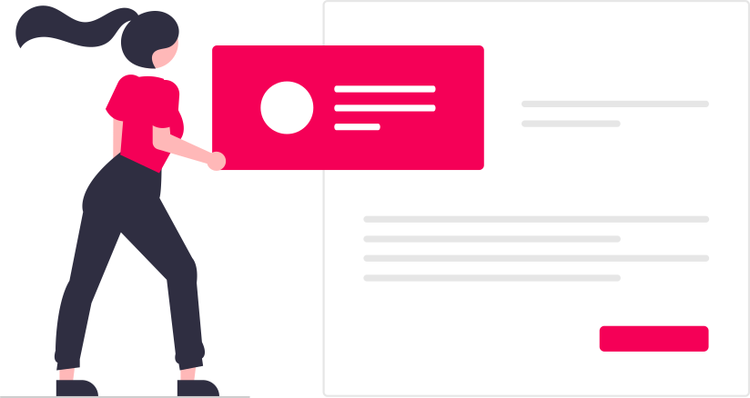

<ion-content>
  <!-- <ion-button (click)="finish()"> done intro </ion-button> -->

  <ion-slides mode="ios" pager>
    <ion-slide>
      <div class="slide">
        
        <ion-text mode="ios">
          <h2>Welcome</h2>
        </ion-text>
        <ion-text mode="ios">
          <p>
            The <b>Fujitsu BSE Forum</b> is a practical preview of the ionic
            framework in action, and a demonstration of proper code use.
          </p>
        </ion-text>
      </div>
    </ion-slide>

    <ion-slide>
      
      <h2>Glossary</h2>
      <p>
        Look for technical computer terminologies from the Glossary and find
        their appropriate Nihongo translation.
      </p>
    </ion-slide>

    <ion-slide>
      
      <h2>Ask your colleagues</h2>
      <p>
        <b>Post</b> your questions about a technical computer jargon that you
        may find confusing or hard to translate into Nihongo.
      </p>
    </ion-slide>

    <ion-slide>
      
      <h2>Discuss</h2>
      <p>
        Start contributing now by <b>Asking</b>, <b>Answering</b> and
        <b>Supporting</b>
        posts that you may find very helpful.
      </p>
      <ion-button fill="clear" (click)="finish()">
        <ion-text>Continue</ion-text>
        <ion-icon slot="end" name="arrow-forward"></ion-icon>
      </ion-button>
    </ion-slide>
  </ion-slides>
</ion-content>
